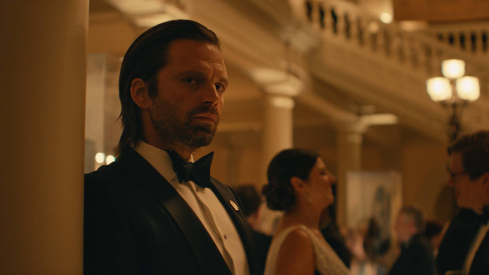

Bucky Barnes / Soldado Invernal
Interpretado por: Sebastian Stan
Bucky Barnes, outrora o Soldado Invernal, é um super-soldado com um passado sombrio de manipulação mental e assassinatos. Em Thunderbolts, ele busca expiar seus pecados e encontrar um novo propósito. Sua experiência e habilidades o tornam um membro valioso da equipe, enquanto ele enfrenta seus demônios internos e luta por redenção.